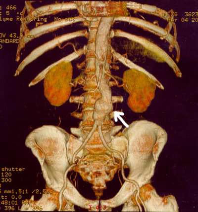

Lesson 18: Inference for Two Proportions
Hypothesis Tests
Case Study: Another Taste of PTC


The ability to taste the chemical Phenylthiocarbamide (PTC) is hereditary. Some people can taste it, while others cannot. Even though the ability to taste PTC was observed in all age, race, and sex groups, this does not address the issue about whether men or women are more likely to be able taste PTC.
Further exploration of the PTC data allows us to investigate if there is a difference in the proportion of men and women who can taste PTC. The following table of counts summarizes Elise Johnson’s results:
| Can Taste PTC? | Female | Male | Total |
|---|---|---|---|
| No | 15 | 14 | 29 |
| Yes | 51 | 38 | 89 |
| Total | 66 | 52 | 118 |
These data are available in the file PTCTasting. Note the way the data are organized in the file. One column gives the gender, another column indicates if the individual can taste PTC, and a third column gives counts for each group.
Researchers want to know if the ability to taste PTC is a sex-linked trait. This can be summarized in the following research question: Is there a difference in the proportion of males and the proportion of females who can taste PTC? The hypothesis is that there is no difference in the the true proportion of males who can taste PTC compared to the true proportion of females who can taste PTC. This is written mathematically as:
\[ \begin{array}{rl} H_0: & p_\text{males} = p_\text{females} \\ H_a: & p_\text{males} \ne p_\text{females} \\ \end{array} \]

A sample of 66 females and 52 males were provided with PTC strips and asked to indicate if they could taste the chemical or not. (This research was approved by the BYU-Idaho Institutional Review Board.)

When working with categorical data, it is natural to summarize the data by computing proportions. If someone has the ability to taste PTC, we will call this a success. The sample proportion is defined as the number of successes observed divided by the total number of observations. For the males, the proportion who could taste PTC was: \[ \hat p_\text{males} = \frac{x_2}{n_2} = \frac{38}{52} \approx 0.731 \] This works out to be about 73.1%. For the females, the proportion of the sample who could taste the PTC was: \[ \hat p_\text{females} = \frac{x_1}{n_1} = \frac{51}{66} \approx 0.773 \] This is approximately 77.3% of the people who were surveyed.
When working with data for two proportions, graphically displaying the data can help us compare each proportion. Bar charts are essential tools for describing our data. The stacked bar chart show below was created in R.
Show Code
The null and alternative hypotheses for a test of equality of two proportions is: \[ \begin{array}{rl} H_0: & p_1 = p_2 \\ H_a: & p_1 \ne p_2 \\ \end{array} \]
In this PTC study, we let \(p_1\) be the true proportion of males that could taste PTC, \(p_\text{males}\). We let \(p_2\) be the true proportion of females that could taste PTC, \(p_\text{females}\). If the null hypothesis is true, then the proportion of females who can taste PTC is the same as the proportion of males who can taste PTC.
The test statistic of a two-proportion test is a \(z\), and is given by the equation: \[ z = \frac{ \left( \hat p_1 - \hat p_2 \right) - \left( p_1 - p_2 \right) }{ \sqrt{\hat p \left( 1-\hat p \right) \left( \frac{1}{n_1} + \frac{1}{n_2} \right) } } \] where \[ \begin{array}{lll} n_1 = \text{sample size for group 1:} & n_1 = 66 & \text{(number of females)} \\ n_2 = \text{sample size for group 2:} & n_2 = 52 & \text{(number of males)} \\ \hat p_1 = \text{sample proportion for group 1:} & \hat p_1 = \frac{x_1}{n_1} = \frac{51}{66} & \text{(proportion of females who can taste PTC)}\\ \hat p_2 = \text{sample proportion for group 2:} ~ & \hat p_2 = \frac{x_2}{n_2} = \frac{38}{52} & \text{(proportion of males who can taste PTC)}\\ \hat p = \text{overall sample proportion:} & \hat p = \frac{x_1+x_2}{n_1+n_2} = \frac{89}{118} & \text{(overall proportion who can taste PTC)}\\ \end{array} \]
However, computing this test statistic by hand is tedious. R will compute the test statistic for us.
R Instructions for Testing Two Proportions
Use the prop.test( ) function in R to perform a test of two proportions. The test requires typing in
x = c(first value, second value)n = c(first value, second value)correct = FALSEwhich turns off the Yate’s Continuity Correction. This correction is only needed for small sample sizes. (Recall that if \(np < 10\) or \(n(1-p)<10\), then the sampling distribution of the sample proportion may not be normal. In that case, usingcorrect = TRUEwould be appropriate.)alternative = "two.sided"runs a two-tailed test, butalternative = "greater"oralternative = "less"could also be used if specified in the alternative hypothesis of the test.
prop.test(x = c(38,51), n = c(52,66), correct = FALSE, alternative = "two.sided")
2-sample test for equality of proportions without continuity
correction
data: c(38, 51) out of c(52, 66)
X-squared = 0.27623, df = 1, p-value = 0.5992
alternative hypothesis: two.sided
95 percent confidence interval:
-0.1992990 0.1153829
sample estimates:
prop 1 prop 2
0.7307692 0.7727273 At the bottom of the output above we are given the “prop 1” and “prop 2” sample proportions. Since we entered the male values first, “prop 1” is for the males and “prop 2” is for the females.
Note: prop.test( ) gives the “Test Statistic” as the “X-squared” value. You will need to square root that value to get the \(Z\)-value of the test. As shown above, this test gave X-squared $ = 0.27623$, so the \(Z\)-value of the test statistic (which is required for quizzes and exams in Math 221) is \(Z = \sqrt{0.27623} = 0.526\).
The \(P\)-value of this test is 0.599, which is confirmed by putting the \(Z\)-value into the Normal Probability Applet and shading both tails.

(While you don’t need to shade the Normal Distribution yourself to get the \(P\)-value, as R already did that for you, it is useful to recognize that is what R is doing to get the \(P\)-value.)
If you are interested in seeing how these same calculations could be done by had, click the button below. These calculations are optional reading, and are only included for the curious student.
Show Math Calculations
Men and women appear to be able to taste PTC in equal proportions. There is not enough evidence to say that one gender is able to taste PTC more than the other. It appears that the ability to taste PTC is not a sex-linked trait.
Case Study: Mortality Rates and Day of Admission–Aortic Aneurysms

Some people have claimed that mortality (death) rates are higher for patients admitted to a hospital on a weekend compared to patients admitted on a weekday. Researchers Chaim Bell and Donald Redelmeier analyzed admission data from hospital emergency rooms in Ontario, Canada .
The aorta is a major artery that takes oxygen-rich blood from the heart to the entire body. In some patients, this artery can swell like a balloon and burst. If this occurs in the abdomen, the technical term for the event is a ruptured abdominal aortic aneurysm. Although this condition is treatable, it requires immediate action, or the patient will die rapidly.
The problem is that the quality of care in an emergency care facility may differ at different times of the week. Doctors Bell and Redelmeier hypothesized that the probability that a patient with an aortic aneurysm will die is greater if they are admitted to a hospital on a weekend compared to a weekday.
Hypothesis: The proportion of patients with a ruptured abdominal aortic aneurysm who will die is greater on the weekends than on weekdays.
\[ H_0: p_\text{weekday death} = p_\text{weekend death} \] \[ H_a: p_\text{weekday death} < p_\text{weekend death} \]
To test this claim, the researchers accessed medical records for several patients admitted to the emergency department of the hospitals in Ontario, Canada. They recorded the number of patients admitted with an aortic aneurysm on weekdays compared to weekends.
Data representative of their results are given below .
| Outcome | Weekday Admission | Weekend Admission |
|---|---|---|
| Died (x) | \(x_1 = 1476\) | \(x_2 = 553\) |
| Survived | \(2669\) | \(756\) |
| Total (n) | \(n_1 = 4145\) | \(n_2 = 1309\) |
- Use the data above to find the estimated proportion of patients admitted with an aortic aneurysm on a weekday who will die, \(\hat p_1\).
- Use the data to compute the estimated proportion of the patients admitted on a weekend that will die, \(\hat p_2\).
- What do you notice about \(\hat p_1\) and \(\hat p_2\)?
- Create a bar chart showing the two sample proportions side-by-side.

We now conduct a formal hypothesis test to determine if the mortality (death) rate is greater on a weekend compared to a weekday. First, we state the null and alternative hypotheses: \[ \begin{align} H_0: & p_1 = p_2 \\ H_a: & p_1 < p_2 \end{align} \] where group 1 represents the patients admitted on a weekday and group 2 represents patients admitted on a weekend. Note that if \(p_1 < p_2\), then the risk of death is greater in group 2 than in group 1. We will use the 0.05 level of significance.
Checking Requirements for the Hypothesis Test
If the sample size is large in both groups, then we can use the normal distribution to compute the \(P\)-value. To check if the sample size is large enough, we need to check the following requirements: \[ \begin{array}{rrr} n_1 \cdot \hat p_1 \ge 10 && n_2 \cdot \hat p_2 \ge 10 \\ n_1 \cdot \left(1-\hat p_1\right) \ge 10 && n_2 \cdot \left(1-\hat p_2\right) \ge 10 \end{array} \] If all of these requirements are satisfied, the two proportion test can be used to assess whether the true population proportions are equal or if the risk of death is greater on weekends.
Note that the requirements are all satisfied: \[ \begin{array}{rr} n_1 \cdot \hat p_1 = 4145 \cdot 0.3561 = 1476 \ge 10 & n_2 \cdot \hat p_2 = 1309 \cdot 0.4225 = 553 \ge 10 \\ n_1 \cdot \left(1-\hat p_1\right) = 4145 \cdot 0.6439 = 2669 \ge 10 & n_2 \cdot \left(1-\hat p_2\right) = 1309 \cdot 0.5775 = 756 \ge 10 \end{array} \]
Reminder: \(~ x_1 = 1476,~x_2 = 553\), \(n_1 = 4145,~n_2 = 1309\), \(\hat p_1 = \frac{x_1}{n_1},~\hat p_2 = \frac{x_2}{n_2}\).
We perform the test using prop.test( ) in R.
prop.test(x = c(1476, 533), n = c(4145, 1309), correct = FALSE, alternative = "less")
2-sample test for equality of proportions without continuity
correction
data: c(1476, 533) out of c(4145, 1309)
X-squared = 11.16, df = 1, p-value = 0.0004179
alternative hypothesis: less
95 percent confidence interval:
-1.00000000 -0.02562222
sample estimates:
prop 1 prop 2
0.3560917 0.4071811 The \(P\)-value$ = 0.0004179 < 0.05 = $, so we reject the null hypothesis.
There is sufficient evidence to suggest that the true proportion of patients who die from an aortic aneurysm is greater on the weekends than on the weekdays. It appears that there are substantial differences in the quality of care available to patients on the weekends compared to patients on weekdays.
Case Study: Mortality Rates and Day of Admission: Heart Attacks

Heart attacks are a leading cause of death in many areas of the world. The study by Doctors Bell and Redelmeier included an analysis of the risk of dying of a heart attack, after admission to a hospital. The researchers reported the following death rates, depending on whether the heart attack occurred on a weekday or a weekend .
| Outcome | Weekday Admission | Weekend Admission |
|---|---|---|
| Died (x) | 17,113 | 6,289 |
| Survived | 100,596 | 36,222 |
| Total (n) | 117,709 | 42,511 |
In this section, you will conduct a hypothesis test to determine if the proportion of patients who die of a heart attack is greater on weekends than on weekdays. Use the 0.05 level of significance.
- Summarize the relevant background information
- Describe the data collection process.
- The value of \(\hat p_1\), the sample proportion of patients who died of a heart attack on a weekday, is \(\hat p_1 = \frac{17113}{117709} = 0.14538\). Find the value of \(\hat p_2\).
- Create a chart illustrating the data.

- Based on your answers to questions 7 and 8, does it appear that the risk of dying is greater if a heart attack occurs on a weekend than on a weekday?
- If the proportion of patients who die of a heart attack is greater on weekends than on weekdays, which of the following would best describe the relationship?
- A. \(p_1 = p_2\)
- B. \(p_1 > p_2\)
- C. \(p_1 < p_2\)
- D. \(p_1 \ne p_2\)
- Replace the circles (\(\bigcirc\)) in the following null and alternative hypotheses with two of the following symbols: $ = ><$.
\[ \begin{array}{rl} H_0: & p_1 \bigcirc p_2 \\ H_a: & p_1 \bigcirc p_2 \end{array} \]
Show/Hide Solution- What are the requirements for this test?
- Are the requirements for this hypothesis test satisfied? Justify your answer.
- What type of test statistic does the two proportion test use? How do you obtain this test statistic using R?
- Perform a two-proportion test in R for these data, report the test statistic, \(Z\). (Remember to take the square root of “X-squared” to get the test statistic.)
- Present a sketch of the sampling distribution, showing the test statistic and the \(P\)-value.

- Find the \(P\)-value.
- Compare the \(P\)-value to the level of significance. Which is smaller? Will you reject, or fail to reject, the null hypothesis?
- What is your decision?
- Fill in the blanks in the following sentence:
- There is \(\text{____________}\) evidence to suggest that the true proportion of patients who die of a heart attack is \(\text{__________}\) on weekends than on weekdays.*
- If you were to have a heart attack, would you be more concerned if it occurred on a weekend than on a weekday?
Confidence Intervals
Case Study: Managing Fox Populations

During the mid 1800’s, European foxes were introduced to the Australian mainland. These predators have been responsible for the reduction or extinction of several species of native wildlife.
The Royal Botanic Gardens Cranbourne is a 914 acre (370 ha) conservation reserve outside Melbourne, Australia. Predation by foxes has been an ongoing problem in the gardens. To reduce the risk to native species, a systematic program of killing foxes was implemented.
One way to monitor the presence of foxes is to look for fox tracks in specific sandy areas, called sand-pads. Before beginning a systematic effort to reduce the fox population, ecologists observed fox tracks in the sand-pads 576 out of the 950 times the sand-pads were observed. After eliminating some of the foxes, the ecologists observed fox tracks in the sand-pads 268 times out of the 1359 times they checked the sand-pads . The ecologists want to know if there is a difference in the proportion of times fox tracks are observed before versus after the intervention to reduce the fox population.
One way to compare two proportions is to make a confidence interval for the difference in the proportions.
The equation for the confidence interval for the difference of two proportions may look a little daunting at first, but with some practice, it is not too difficult.
Before we compute the confidence interval, we first organize our data and calculate some statistics that will be useful later. We divide the data into two groups: before foxes were targeted (Group 1) and after (Group 2). For each group, let \(x_1\) and \(x_2\) represent the number of times fox prints were observed in the sand-pads before and after the ecologists began systematically eliminating the foxes, respectively. Similarly, Let \(n_1\) and \(n_2\) be the number of times the ecologists checked the sand-pads in the before and after periods, respectively.
Fox Tracks Data
| Before Intervention | After Intervention | Combined Data | |
|---|---|---|---|
| Fox Tracks Observed | \(x_1 = 576\) | \(x_2 = 268\) | \(x_1 + x_2 = 576 + 268 = 844\) |
| Total Observations | \(n_1 = 950\) | \(n_2 = 1359\) | \(n_1 + n_2 = 950 + 1359 = 2309\) |
We compute \(\hat p\) for each group.
For group 1: \[ \hat p_1 = \frac{x_1}{n_1} = \frac{576}{950} \approx 0.606 \]
For group 2: \[ \hat p_2 = \frac{x_2}{n_2} = \frac{268}{1359}\approx 0.197 \]
When working with two proportions, we are mainly interested in the difference between the proportions. In this case, subtracting the two proportions gives us an estimate of how different the true proportions \(p_1\) and \(p_2\) might be.
\[ \hat p_1 -\hat p_2 = 0.606 - 0.197 = 0.409 \]
This tells us that it appears the first proportion, \(p_1\) is somewhere around 40.9 percentage points higher than \(p_2\), which is quite a bit! It seems the intervention lowered the prevalence of foxes in the sand-pads. However, our conclusions are based on sample proportions instead of the true proportions. So we can’t be sure on exactly how much the true proportions actually differ. Using a confidence interval to estimate a set of possibilities for true difference in proportions can give us greater insight.
R Instructions for the Confidence Interval of the Difference of Two Proportions
Use the prop.test( ) function in R to obtain a confidence interval for the difference of two proportions.
prop.test(x = c(576, 268), n = c(950, 1359), correct = FALSE, conf.level = 0.95)
2-sample test for equality of proportions without continuity
correction
data: c(576, 268) out of c(950, 1359)
X-squared = 403.53, df = 1, p-value < 2.2e-16
alternative hypothesis: two.sided
95 percent confidence interval:
0.3715259 0.4466980
sample estimates:
prop 1 prop 2
0.6063158 0.1972038 The lower bound for a 95% confidence interval for the difference of the proportions of times fox prints are observed in the sand-pads is \(0.371\) while the upper-bound is \(0.447\).
So, the 95% confidence interval for the difference in the proportions is:
\[ (0.372, 0.447) \]
If we switch the way we label group 1 and group 2, then our confidence interval would have the opposite signs: \((-0.447, -0.372)\).
To interpret this confidence interval, we say, “We are 95% confident that the true difference in the proportions of times fox prints will appear in the sand-pads is between 0.372 and 0.447.”
Based on this result, it is reasonable to conclude that the proportion of times foxes are observed in the sand-pads has been reduced by anywhere from 37.2 percentage points to 44.7 percentage points. It seems that the work to reduce the number of foxes is having an effect on their presence in the reserve.
Checking Requirements for a Confidence Interval
The requirements for computing a confidence interval for two proportions are the same as the requirements for doing a hypothesis test.
\[ \begin{array}{rrr} n_1 \cdot \hat p_1 \ge 10 && n_2 \cdot \hat p_2 \ge 10 \\ n_1 \cdot \left(1-\hat p_1\right) \ge 10 && n_2 \cdot \left(1-\hat p_2\right) \ge 10 \end{array} \]
In this example, all of the requirements are satisfied:
\[ \begin{array}{rr} n_1 \cdot \hat p_1 = 950 \cdot 0.606 = 576 \ge 10 & n_2 \cdot \hat p_2 = 1359 \cdot 0.197 = 268 \ge 10 \\ n_1 \cdot \left(1-\hat p_1\right) = 950 \cdot (1-0.606) = 374 \ge 10 & n_2 \cdot \left(1-\hat p_2\right) = 1359 \cdot (1-0.197) = 1091 \ge 10 \end{array} \]
Summary
When conducting hypothesis tests using two proportions, the null hypothesis is always \(p_1 = p_2\), indicating that there is no difference between the two proportions. The alternative hypothesis can be left-tailed (\(<\)), right-tailed(\(>\)), or two-tailed(\(\ne\)).
For a hypothesis test and confidence interval of two proportions, we use the following symbols: \[ \begin{array}{lcl} \text{Sample proportion for group 1:} & \hat p_1 = \displaystyle{\frac{x_1}{n_1}} \\ \text{Sample proportion for group 2:} & \hat p_2 = \displaystyle{\frac{x_2}{n_2}} \end{array} \]
A test of two proportions (or confidence interval for two proportions) is appropriate to perform whenever all of the following requirements are satisfied:
\[ n_1\hat{p}_1 \geq 10 \quad\quad n_2 \hat{p}_2 \geq 10\\ n_1(1-\hat{p}_1) \geq 10 \quad\quad n_2 (1-\hat{p}_2) \geq 10 \]
Whenever zero is contained in the confidence interval of the difference of the true proportions we conclude that there is no significant difference between the two proportions.
Use
prop.test(x = c( , ), n = c( , ), correct = FALSE, alternative = "two.sided")to perform a hypothesis test of two proportions.Use
prop.test(x = c( , ), n = c( , ), correct = FALSE, conf.level = 0.95)to obtain a confidence interval for the difference of two proportions.
Copyright © 2020 Brigham Young University-Idaho. All rights reserved.